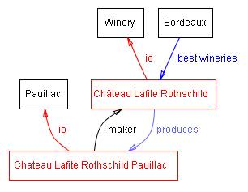
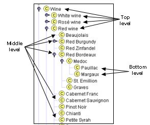
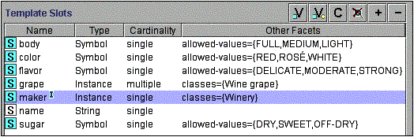
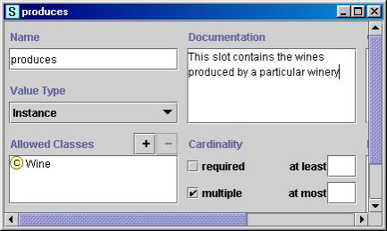
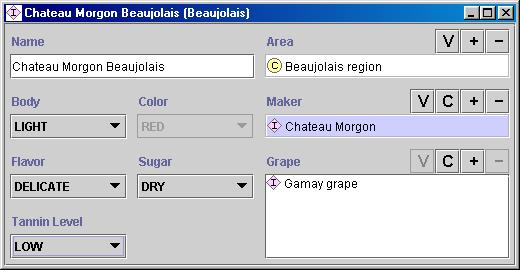
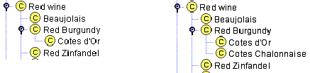
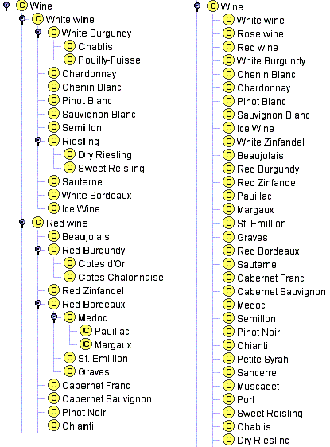
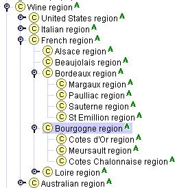
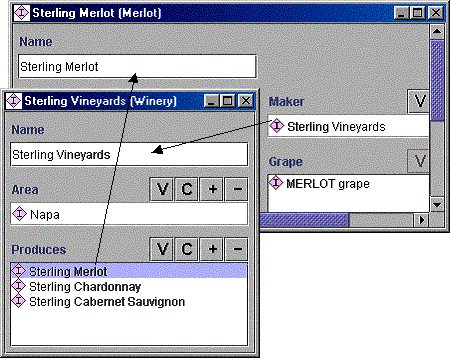

Natalya F. Noy and Deborah L. McGuinness
Stanford University, Stanford, CA, 94305
noy@smi.stanford.edu and dlm@ksl.stanford.edu
In recent years the development of ontologies—explicit formal specifications of the terms in the domain and relations among them (Gruber 1993)—has been moving from the realm of Artificial-Intelligence laboratories to the desktops of domain experts. Ontologies have become common on the World-Wide Web. The ontologies on the Web range from large taxonomies categorizing Web sites (such as on Yahoo!) to categorizations of products for sale and their features (such as on Amazon.com). The WWW Consortium (W3C) is developing the Resource Description Framework (Brickley and Guha 1999), a language for encoding knowledge on Web pages to make it understandable to electronic agents searching for information. The Defense Advanced Research Projects Agency (DARPA), in conjunction with the W3C, is developing DARPA Agent Markup Language (DAML) by extending RDF with more expressive constructs aimed at facilitating agent interaction on the Web (Hendler and McGuinness 2000). Many disciplines now develop standardized ontologies that domain experts can use to share and annotate information in their fields. Medicine, for example, has produced large, standardized, structured vocabularies such as snomed (Price and Spackman 2000) and the semantic network of the Unified Medical Language System (Humphreys and Lindberg 1993). Broad general-purpose ontologies are emerging as well. For example, the United Nations Development Program and Dun & Bradstreet combined their efforts to develop the UNSPSC ontology which provides terminology for products and services (www.unspsc.org).
An ontology defines a common vocabulary for researchers who need to share information in a domain. It includes machine-interpretable definitions of basic concepts in the domain and relations among them.
Why would someone want to develop an ontology? Some of the reasons are:
· To share common understanding of the structure of information among people or software agents
· To enable reuse of domain knowledge
· To make domain assumptions explicit
· To separate domain knowledge from the operational knowledge
· To analyze domain knowledge
Sharing common understanding of the structure of information among people or software agents is one of the more common goals in developing ontologies (Musen 1992; Gruber 1993). For example, suppose several different Web sites contain medical information or provide medical e-commerce services. If these Web sites share and publish the same underlying ontology of the terms they all use, then computer agents can extract and aggregate information from these different sites. The agents can use this aggregated information to answer user queries or as input data to other applications.
Enabling reuse of domain knowledge was one of the driving forces behind recent surge in ontology research. For example, models for many different domains need to represent the notion of time. This representation includes the notions of time intervals, points in time, relative measures of time, and so on. If one group of researchers develops such an ontology in detail, others can simply reuse it for their domains. Additionally, if we need to build a large ontology, we can integrate several existing ontologies describing portions of the large domain. We can also reuse a general ontology, such as the UNSPSC ontology, and extend it to describe our domain of interest.
Making explicit domain assumptions underlying an implementation makes it possible to change these assumptions easily if our knowledge about the domain changes. Hard-coding assumptions about the world in programming-language code makes these assumptions not only hard to find and understand but also hard to change, in particular for someone without programming expertise. In addition, explicit specifications of domain knowledge are useful for new users who must learn what terms in the domain mean.
Separating the domain knowledge from the operational knowledge is another common use of ontologies. We can describe a task of configuring a product from its components according to a required specification and implement a program that does this configuration independent of the products and components themselves (McGuinness and Wright 1998). We can then develop an ontology of PC-components and characteristics and apply the algorithm to configure made-to-order PCs. We can also use the same algorithm to configure elevators if we “feed” an elevator component ontology to it (Rothenfluh et al. 1996).
Analyzing domain knowledge is possible once a declarative specification of the terms is available. Formal analysis of terms is extremely valuable when both attempting to reuse existing ontologies and extending them (McGuinness et al. 2000).
Often an ontology of the domain is not a goal in itself. Developing an ontology is akin to defining a set of data and their structure for other programs to use. Problem-solving methods, domain-independent applications, and software agents use ontologies and knowledge bases built from ontologies as data. For example, in this paper we develop an ontology of wine and food and appropriate combinations of wine with meals. This ontology can then be used as a basis for some applications in a suite of restaurant-managing tools: One application could create wine suggestions for the menu of the day or answer queries of waiters and customers. Another application could analyze an inventory list of a wine cellar and suggest which wine categories to expand and which particular wines to purchase for upcoming menus or cookbooks.
We build on our experience using Protégé-2000 (Protege 2000), Ontolingua (Ontolingua 1997), Chimaera (Chimaera 2000) as ontology-editing environments. In this guide, we use Protégé-2000 for our examples.
The wine and food example that we use throughout this guide, is loosely based on an example knowledge base presented in the paper describing CLASSIC—a knowledge-representation system based on a description-logics approach (Brachman et al. 1991). The CLASSIC tutorial (McGuinness et al. 1994) has developed this example further. Protégé-2000 and other frame-based systems describe ontologies declaratively, stating explicitly what the class hierarchy is and to which classes individuals belong.
Some ontology-design ideas in this guide originated from the literature on object-oriented design (Rumbaugh et al. 1991; Booch et al. 1997). However, ontology development is different from designing classes and relations in object-oriented programming. Object-oriented programming centers primarily around methods on classes—a programmer makes design decisions based on the operational properties of a class, whereas an ontology designer makes these decisions based on the structural properties of a class. As a result, a class structure and relations among classes in an ontology are different from the structure for a similar domain in an object-oriented program.
It is impossible to cover all the issues that an ontology developer may need to grapple with and we are not trying to address all of them in this guide. Instead, we try to provide a starting point; an initial guide that would help a new ontology designer to develop ontologies. At the end, we suggest places to look for explanations of more complicated structures and design mechanisms if the domain requires them.
Finally, there is no single correct ontology-design methodology and we did not attempt to define one. The ideas that we present here are the ones that we found useful in our own ontology-development experience. At the end of this guide we suggest a list of references for alternative methodologies.
The Artificial-Intelligence literature contains many definitions of an ontology; many of these contradict one another. For the purposes of this guide an ontology is a formal explicit description of concepts in a domain of discourse (classes (sometimes called concepts)), properties of each concept describing various features and attributes of the concept (slots (sometimes called roles or properties)), and restrictions on slots (facets (sometimes called role restrictions)). An ontology together with a set of individual instances of classes constitutes a knowledge base. In reality, there is a fine line where the ontology ends and the knowledge base begins.
Classes are the focus of most ontologies. Classes describe concepts in the domain. For example, a class of wines represents all wines. Specific wines are instances of this class. The Bordeaux wine in the glass in front of you while you read this document is an instance of the class of Bordeaux wines. A class can have subclasses that represent concepts that are more specific than the superclass. For example, we can divide the class of all wines into red, white, and rosé wines. Alternatively, we can divide a class of all wines into sparkling and non-sparkling wines.
Slots describe properties of classes and instances: Château Lafite Rothschild Pauillac wine has a full body; it is produced by the Château Lafite Rothschild winery. We have two slots describing the wine in this example: the slot body with the value full and the slot maker with the value Château Lafite Rothschild winery. At the class level, we can say that instances of the class Wine will have slots describing their flavor, body, sugar level, the maker of the wine and so on.[1]
All instances of the class Wine, and its subclass Pauillac, have a slot maker the value of which is an instance of the class Winery (Figure 1). All instances of the class Winery have a slot produces that refers to all the wines (instances of the class Wine and its subclasses) that the winery produces.
In practical terms, developing an ontology includes:
· defining classes in the ontology,
· arranging the classes in a taxonomic (subclass–superclass) hierarchy,
· defining slots and describing allowed values for these slots,
· filling in the values for slots for instances.
We can then create a knowledge base by defining individual instances of these classes filling in specific slot value information and additional slot restrictions.
|  |
As we said earlier, there is no one “correct” way or methodology for developing ontologies. Here we discuss general issues to consider and offer one possible process for developing an ontology. We describe an iterative approach to ontology development: we start with a rough first pass at the ontology. We then revise and refine the evolving ontology and fill in the details. Along the way, we discuss the modeling decisions that a designer needs to make, as well as the pros, cons, and implications of different solutions.
First, we would like to emphasize some fundamental rules in ontology design to which we will refer many times. These rules may seem rather dogmatic. They can help, however, to make design decisions in many cases.
1) There is no one correct way to model a domain— there are always viable alternatives. The best solution almost always depends on the application that you have in mind and the extensions that you anticipate.
2) Ontology development is necessarily an iterative process.
3) Concepts in the ontology should be close to objects (physical or logical) and relationships in your domain of interest. These are most likely to be nouns (objects) or verbs (relationships) in sentences that describe your domain.
That is, deciding what we are going to use the ontology for, and how detailed or general the ontology is going to be will guide many of the modeling decisions down the road. Among several viable alternatives, we will need to determine which one would work better for the projected task, be more intuitive, more extensible, and more maintainable. We also need to remember that an ontology is a model of reality of the world and the concepts in the ontology must reflect this reality. After we define an initial version of the ontology, we can evaluate and debug it by using it in applications or problem-solving methods or by discussing it with experts in the field, or both. As a result, we will almost certainly need to revise the initial ontology. This process of iterative design will likely continue through the entire lifecycle of the ontology.
Step 1. Determine the domain and scope of the ontology
We suggest starting the development of an ontology by defining its domain and scope. That is, answer several basic questions:
· What is the domain that the ontology will cover?
· For what we are going to use the ontology?
· For what types of questions the information in the ontology should provide answers?
· Who will use and maintain the ontology?
The answers to these questions may change during the ontology-design process, but at any given time they help limit the scope of the model.
Consider the ontology of wine and food that we introduced earlier. Representation of food and wines is the domain of the ontology. We plan to use this ontology for the applications that suggest good combinations of wines and food.
Naturally, the concepts describing different types of wines, main food types, the notion of a good combination of wine and food and a bad combination will figure into our ontology. At the same time, it is unlikely that the ontology will include concepts for managing inventory in a winery or employees in a restaurant even though these concepts are somewhat related to the notions of wine and food.
If the ontology we are designing will be used to assist in natural-language processing of articles in wine magazines, it may be important to include synonyms and part-of-speech information for concepts in the ontology. If the ontology will be used to help restaurant customers decide which wine to order, we need to include retail-pricing information. If it is used for wine buyers in stocking a wine cellar, wholesale pricing and availability may be necessary. If the people who will maintain the ontology describe the domain in a language that is different from the language of the ontology users, we may need to provide the mapping between the languages.
One of the ways to determine the scope of the ontology is to sketch a list of questions that a knowledge base based on the ontology should be able to answer, competency questions (Gruninger and Fox 1995). These questions will serve as the litmus test later: Does the ontology contain enough information to answer these types of questions? Do the answers require a particular level of detail or representation of a particular area? These competency questions are just a sketch and do not need to be exhaustive.
In the wine and food domain, the following are the possible competency questions:
· Which wine characteristics should I consider when choosing a wine?
· Is Bordeaux a red or white wine?
· Does Cabernet Sauvignon go well with seafood?
· What is the best choice of wine for grilled meat?
· Which characteristics of a wine affect its appropriateness for a dish?
· Does a bouquet or body of a specific wine change with vintage year?
· What were good vintages for Napa Zinfandel?
Judging from this list of questions, the ontology will include the information on various wine characteristics and wine types, vintage years—good and bad ones—classifications of foods that matter for choosing an appropriate wine, recommended combinations of wine and food.
Step 2. Consider reusing existing ontologies
It is almost always worth considering what someone else has done and checking if we can refine and extend existing sources for our particular domain and task. Reusing existing ontologies may be a requirement if our system needs to interact with other applications that have already committed to particular ontologies or controlled vocabularies. Many ontologies are already available in electronic form and can be imported into an ontology-development environment that you are using. The formalism in which an ontology is expressed often does not matter, since many knowledge-representation systems can import and export ontologies. Even if a knowledge-representation system cannot work directly with a particular formalism, the task of translating an ontology from one formalism to another is usually not a difficult one.
There are libraries of reusable ontologies on the Web and in the literature. For example, we can use the Ontolingua ontology library (http://www.ksl.stanford.edu/software/ontolingua/) or the DAML ontology library (http://www.daml.org/ontologies/). There are also a number of publicly available commercial ontologies (e.g., UNSPSC (www.unspsc.org), RosettaNet (www.rosettanet.org), DMOZ (www.dmoz.org)).
For example, a knowledge base of French wines may already exist. If we can import this knowledge base and the ontology on which it is based, we will have not only the classification of French wines but also the first pass at the classification of wine characteristics used to distinguish and describe the wines. Lists of wine properties may already be available from commercial Web sites such as www.wines.com that customers consider use to buy wines.
For this guide however we will assume that no relevant ontologies already exist and start developing the ontology from scratch.
Step 3. Enumerate important terms in the ontology
It is useful to write down a list of all terms we would like either to make statements about or to explain to a user. What are the terms we would like to talk about? What properties do those terms have? What would we like to say about those terms? For example, important wine-related terms will include wine, grape, winery, location, a wine’s color, body, flavor and sugar content; different types of food, such as fish and red meat; subtypes of wine such as white wine, and so on. Initially, it is important to get a comprehensive list of terms without worrying about overlap between concepts they represent, relations among the terms, or any properties that the concepts may have, or whether the concepts are classes or slots..
The next two steps—developing the class hierarchy and defining properties of concepts (slots)—are closely intertwined. It is hard to do one of them first and then do the other. Typically, we create a few definitions of the concepts in the hierarchy and then continue by describing properties of these concepts and so on. These two steps are also the most important steps in the ontology-design process. We will describe them here briefly and then spend the next two sections discussing the more complicated issues that need to be considered, common pitfalls, decisions to make, and so on.
Step 4. Define the classes and the class hierarchy
There are several possible approaches in developing a class hierarchy (Uschold and Gruninger 1996):
· A top-down development process starts with the definition of the most general concepts in the domain and subsequent specialization of the concepts. For example, we can start with creating classes for the general concepts of Wine and Food. Then we specialize the Wine class by creating some of its subclasses: White wine, Red wine, Rosé wine. We can further categorize the Red wine class, for example, into Syrah, Red Burgundy, Cabernet Sauvignon, and so on.
· A bottom-up development process starts with the definition of the most specific classes, the leaves of the hierarchy, with subsequent grouping of these classes into more general concepts. For example, we start by defining classes for Pauillac and Margaux wines. We then create a common superclass for these two classes—Medoc—which in turn is a subclass of Bordeaux.
· A combination development process is a combination of the top-down and bottom-up approaches: We define the more salient concepts first and then generalize and specialize them appropriately. We might start with a few top-level concepts such as Wine, and a few specific concepts, such as Margaux . We can then relate them to a middle-level concept, such as Medoc. Then we may want to generate all of the regional wine classes from France, thereby generating a number of middle-level concepts.
Figure 2 shows a possible breakdown among the different levels of generality.
|  |
Figure 2. The different levels of the Wine taxonomy: Wine, Red wine, White wine, Rosé wine are more general concepts, the top level. Pauillac and Margaux are the most specific classes in the hierarchy, the bottom level.
None of these three methods is inherently better than any of the others. The approach to take depends strongly on the personal view of the domain. If a developer has a systematic top-down view of the domain, then it may be easier to use the top-down approach. The combination approach is often the easiest for many ontology developers, since the concepts “in the middle” tend to be the more descriptive concepts in the domain (Rosch 1978).
If you tend to think of wines by distinguishing the most general classification first, then the top-down approach may work better for you. If you’d rather start by getting grounded with specific examples, the bottom-up approach may be more appropriate.
Whichever approach we choose, we usually start by defining classes. From the list created in Step 3, we select the terms that describe objects having independent existence rather than terms that describe these objects. These terms will be classes in the ontology and will become anchors in the class hierarchy.[2] We organize the classes into a hierarchical taxonomy by asking if by being an instance of one class, the object will necessarily (i.e., by definition) be an instance of some other class.
If a class A is a superclass of class B, then every instance of B is also an instance of A
In other words, the class B represents a concept that is a “kind of” A.
For example, every Pinot Noir wine is necessarily a red wine. Therefore the Pinot Noir class is a subclass of the Red Wine class.
Figure 2 shows a part of the class hierarchy for the Wine ontology. Section 4 contains a detailed discussion of things to look for when defining a class hierarchy.
|  |
Figure 3. The slots for the class Wine and the facets for these slots. The “I” icon next to the maker slot indicates that the slot has an inverse (Section 5.1)
Step 5. Define the properties of classes—slots
The classes alone will not provide enough information to answer the competency questions from Step 1. Once we have defined some of the classes, we must describe the internal structure of concepts.
We have already selected classes from the list of terms we created in Step 3. Most of the remaining terms are likely to be properties of these classes. These terms include, for example, a wine’s color, body, flavor and sugar content and location of a winery.
For each property in the list, we must determine which class it describes. These properties become slots attached to classes. Thus, the Wine class will have the following slots: color, body, flavor, and sugar. And the class Winery will have a location slot.
In general, there are several types of object properties that can become slots in an ontology:
· “intrinsic” properties such as the flavor of a wine;
· “extrinsic” properties such as a wine’s name, and area it comes from;
· parts, if the object is structured; these can be both physical and abstract “parts” (e.g., the courses of a meal)
· relationships to other individuals; these are the relationships between individual members of the class and other items (e.g., the maker of a wine, representing a relationship between a wine and a winery, and the grape the wine is made from.)
Thus, in addition to the properties we have identified earlier, we need to add the following slots to the Wine class: name, area, maker, grape. Figure 3 shows the slots for the class Wine.
All subclasses of a class inherit the slot of that class. For example, all the slots of the class Wine will be inherited to all subclasses of Wine, including Red Wine and White Wine. We will add an additional slot, tannin level (low, moderate, or high), to the Red Wine class. The tannin level slot will be inherited by all the classes representing red wines (such as Bordeaux and Beaujolais).
A slot should be attached at the most general class that can have that property. For instance, body and color of a wine should be attached at the class Wine, since it is the most general class whose instances will have body and color.
Step 6. Define the facets of the slots
Slots can have different facets describing the value type, allowed values, the number of the values (cardinality), and other features of the values the slot can take. For example, the value of a name slot (as in “the name of a wine”) is one string. That is, name is a slot with value type String. A slot produces (as in “a winery produces these wines”) can have multiple values and the values are instances of the class Wine. That is, produces is a slot with value type Instance with Wine as allowed class.
We will now describe several common facets.
Slot cardinality defines how many values a slot can have. Some systems distinguish only between single cardinality (allowing at most one value) and multiple cardinality (allowing any number of values). A body of a wine will be a single cardinality slot (a wine can have only one body). Wines produced by a particular winery fill in a multiple-cardinality slot produces for a Winery class.
Some systems allow specification of a minimum and maximum cardinality to describe the number of slot values more precisely. Minimum cardinality of N means that a slot must have at least N values. For example, the grape slot of a Wine has a minimum cardinality of 1: each wine is made of at least one variety of grape. Maximum cardinality of M means that a slot can have at most M values. The maximum cardinality for the grape slot for single varietal wines is 1: these wines are made from only one variety of grape. Sometimes it may be useful to set the maximum cardinality to 0. This setting would indicate that the slot cannot have any values for a particular subclass.
A value-type facet describes what types of values can fill in the slot. Here is a list of the more common value types:
· String is the simplest value type which is used for slots such as name: the value is a simple string
· Number (sometimes more specific value types of Float and Integer are used) describes slots with numeric values. For example, a price of a wine can have a value type Float
· Boolean slots are simple yes–no flags. For example, if we choose not to represent sparkling wines as a separate class, whether or not a wine is sparkling can be represented as a value of a Boolean slot: if the value is “true” (“yes”) the wine is sparkling and if the value is “false” (“no”) the wine is not a sparkling one.
· Enumerated slots specify a list of specific allowed values for the slot. For example, we can specify that the flavor slot can take on one of the three possible values: strong, moderate, and delicate. In Protégé-2000 the enumerated slots are of type Symbol.
· Instance-type slots allow definition of relationships between individuals. Slots with value type Instance must also define a list of allowed classes from which the instances can come. For example, a slot produces for the class Winery may have instances of the class Wine as its values.[3]
Figure 4 shows a definition of the slot produces at the class Winery.
|  |
Figure 4. The definition of a slot produces that describes the wines produced by a winery. The slot has cardinality multiple, value type Instance, and the class Wine as the allowed class for its values.
Allowed classes for slots of type Instance are often called a range of a slot. In the example in Figure 4 the class Wine is the range of the produces slot. Some systems allow restricting the range of a slot when the slot is attached for a particular class.
The classes to which a slot is attached or a classes which property a slot describes, are called the domain of the slot. The Winery class is the domain of the produces slot. In the systems where we attach slots to classes, the classes to which the slot is attached usually constitute the domain of that slot. There is no need to specify the domain separately.
The basic rules for determining a domain and a range of a slot are similar:
When defining a domain or a range for a slot, find the most general classes or class that can be respectively the domain or the range for the slots .
On the other hand, do not define a domain and range that is overly general: all the classes in the domain of a slot should be described by the slot and instances of all the classes in the range of a slot should be potential fillers for the slot. an overly general class for range (i.e., one would not want to make the range THING) but one would want to choose a class that will cover all fillers
Instead of listing all possible subclasses of the Wine class for the range of the produces slot, just list Wine. At the same time, we do not want to specify the range of the slot as THING—the most general class in an ontology.
In more specific terms:
If a list of classes defining a range or a domain of a slot includes a class and its subclass, remove the subclass.
If the range of the slot contains both the Wine class and the Red Wine class, we can remove the Red Wine from the range because it does not add any new information: The Red Wine is a subclass of Wine and therefore the slot range already implicitly includes it as well as all other subclasses of the Wine class.
If a list of classes defining a range or a domain of a slot contains all subclasses of a class A, but not the class A itself, the range should contain only the class A and not the subclasses.
Instead of defining the range of the slot to include Red Wine, White Wine, and Rose Wine (enumerating all the direct subclasses of Wine), we can limit the range to the class Wine itself.
If a list of classes defining a range or a domain of a slot contains all but a few subclasses of a class A, consider if the class A would make a more appropriate range definition.
In systems where attaching a slot to a class is the same as adding the class to the domain of the slot, the same rules apply to slot attachment: On the one hand, we should try to make it as general as possible. On the other hand, we must ensure that each class to which we attach the slot can indeed have the property that the slot represents. We can attach the tannin level slot to each of the classes representing red wines (e.g., Bordeaux, Merlot, Beaujolais, etc.). However, since all red wines have the tannin-level property, we should instead attach the slot to this more general class of Red Wines. Generalizing the domain of the tannin level slot further (by attaching it to the Wine class instead) would not be correct since we do not use tannin level to describe white wines for example.
The last step is creating individual instances of classes in the hierarchy. Defining an individual instance of a class requires (1) choosing a class, (2) creating an individual instance of that class, and (3) filling in the slot values. For example, we can create an individual instance Chateau-Morgon-Beaujolais to represent a specific type of Beaujolais wine. Chateau-Morgon-Beaujolais is an instance of the class Beaujolais representing all Beaujolais wines. This instance has the following slot values defined (Figure 5):
· Body: Light
· Color: Red
· Flavor: Delicate
· Tannin level: Low
· Grape: Gamay (instance of the Wine grape class)
· Maker: Chateau-Morgon (instance of the Winery class)
· Region: Beaujolais (instance of the Wine-Region class)
· Sugar: Dry
|  |
Figure 5. The definition of an instance of the Beaujolais class. The instance is Chateua Morgon Beaujolais from the Beaujolais region, produced from the Gamay grape by the Chateau Morgon winery. It has a light body, delicate flavor, red color, and low tannin level. It is a dry wine.
This section discussed things to look out for and errors that are easy to make when defining classes and a class hierarchy (Step 4 from Section 3). As we have mentioned before, there is no single correct class hierarchy for any given domain. The hierarchy depends on the possible uses of the ontology, the level of the detail that is necessary for the application, personal preferences, and sometimes requirements for compatibility with other models. However, we discuss several guidelines to keep in mind when developing a class hierarchy. After defining a considerable number of new classes, it is helpful to stand back and check if the emerging hierarchy conforms to these guidelines.
The class hierarchy represents an “is-a” relation: a class A is a subclass of B if every instance of B is also an instance of A. For example, Chardonnay is a subclass of White wine. Another way to think of the taxonomic relation is as a “kind-of” relation: Chardonnay is a kind of White wine. A jetliner is a kind of an aircraft. Meat is a kind of food.
A subclass of a class represents a concept that is a “kind of” the concept that the superclass represents.
A common modeling mistake is to include both a singular and a plural version of the same concept in the hierarchy making the former a subclass of the latter. For example, it is wrong to define a class Wines and a class Wine as a subclass of Wines. Once you think of the hierarchy as representing the “kind-of” relationship, the modeling error becomes clear: a single Wine is not a kind of Wines. The best way to avoid such an error is always to use either singular or plural in naming classes (see Section 6 for the discussion on naming concepts).
A subclass relationship is transitive:
If B is a subclass of A and C is a subclass of B, then C is a subclass of A
For example, we can define a class Wine, and then define a class White wine as a subclass of Wine. Then we define a class Chardonnay as a subclass of White wine. Transitivity of the subclass relationship means that the class Chardonnay is also a subclass of Wine. Sometimes we distinguish between direct subclasses and indirect subclasses. A direct subclass is the “closest” subclass of the class: there are no classes between a class and its direct subclass in a hierarchy. That is, there are no other classes in the hierarchy between a class and its direct superclass. In our example, Chardonnay is a direct subclass of White wine and is not a direct subclass of Wine.
Maintaining a consistent class hierarchy may become challenging as domains evolve. For example, for many years, all Zinfandel wines were red. Therefore, we define a class of Zinfandel wines as a subclass of the Red wine class. Sometimes, however, wine makers began to press the grapes and to take away the color-producing aspects of the grapes immediately, thereby modifying the color of the resulting wine. Thus, we get “white zinfandel” whose color is rose. Now we need to break the Zinfandel class into two classes of zinfandel—White zinfandel and Red zinfandel—and classify them as subclasses of Rose wine and Red wine respectively.
It is important to distinguish between a class and its name:
Classes represent concepts in the domain and not the words that denote these concepts.
The name of a class may change if we choose a different terminology, but the term itself represents the objective reality in the world. For example, we may create a class Shrimps, and then rename it to Prawns—the class still represents the same concept. Appropriate wine combinations that referred to shrimp dishes should refer to prawn dishes. In more practical terms, the following rule should always be followed:
Synonyms for the same concept do not represent different classes
Synonyms are just different names for a concept or a term. Therefore, we should not have a class called Shrimp and a class called Prawn, and, possibly a class called Crevette. Rather, there is one class, named either Shrimp or Prawn. Many systems allow associating a list of synonyms, translations, or presentation names with a class. If a system does not allow this associations, synonyms could always be listed in the class documentation.
We should avoid cycles in the class hierarchy. We say that there is a cycle in a hierarchy when some class A has a subclass B and at the same time B is a superclass of A. Creating such a cycle in a hierarchy amounts to declaring that the classes A and B are equivalent: all instances of A are instances of B and all instances of B are also instances of A. Indeed, since B is a subclass of A, all B’s instances must be instances of the class A. Since A is a subclass of B, all A’s instances must also be instances of the class B.
Siblings in the hierarchy are classes that are direct subclasses of the same class (see Section 4.1).
All the siblings in the hierarchy (except for the ones at the root) must be at the same level of generality.
For example, White wine and Chardonnay should not be subclasses of the same class (say, Wine). White wine is a more general concept than Chardonnay. Siblings should represent concepts that fall “along the same line” in the same way that same-level sections in a book are at the same level of generality. In that sense, requirements for a class hierarchy are similar to the requirements for a book outline.
The concepts at the root of the hierarchy however (which are often represented as direct subclasses of some very general class, such as Thing) represent major divisions of the domain and do not have to be similar concepts.
There are no hard rules for the number of direct subclasses that a class should have. However, many well structured ontologies have between two and a dozen direct subclasses. Therefore, the following two guidelines:
If a class has only one direct subclass there may be a modeling problem or the ontology is not complete.
If there are more than a dozen subclasses for a given class then additional intermediate categories may be necessary.
The first of the two rules is similar to a typesetting rule that bulleted lists should never have only one bullet point. For example, most of the red Burgundy wines are Côtes d’Or wines. Suppose we wanted to represent only this majority type of Burgundy wines. We could create a class Red Burgundy and then a single subclass Cotes d’Or (Figure 6a). However, if in our representation red Burgundy and Côtes d’Or wines are essentially equivalent (all red Burgundy wines are Côtes d’Or wines and all Côtes d’Or wines are red Burgundy wines), creating the Cotes d’Or class is not necessary and does not add any new information to the representation. If we were to include Côtes Chalonnaise wines, which are cheaper Burgundy wines from the region just South of Côtes d’Or, then we will create two subclasses of the Burgundy class: Cotes d’Or and Cotes Chalonnaise (Figure 6b).
|  |
Figure 6. Subclasses of the Red Burgundy class. Having a single subclass of a class usually points to a problem in modeling.
Suppose now that we list all types of wines as direct subclasses of the Wine class. This list would then include such more general types of wine as Beaujolais and Bordeaux, as well as more specific types such as Paulliac and Margaux (Figure 7a). The class Wine has too many direct subclasses and, indeed, for the ontology to reflect the different types of wine in a more organized manner, Medoc should be a subclass of Bordeaux and Cotes d’Or should be a subclass of Burgundy. Also having such intermediate categories as Red wine and White wine would also reflect the conceptual model of the domain of wines that many people have (Figure 7b).
However, if no natural classes exist to group concepts in the long list of siblings, there is no need to create artificial classes—just leave the classes the way they are. After all, the ontology is a reflection of the real world, and if no categorization exists in the real world, then the ontology should reflect that.
|  |
Figure 7. Categorizing wines. Having all the wines and types of wine versus having several levels of categorization.
Most knowledge-representation systems allow multiple inheritance in the class hierarchy: a class can be a subclass of several classes. Suppose we would like to create a separate class of dessert wines, the Dessert wine class. The Port wine is both a red wine and a dessert wine.[4] Therefore, we define a class Port to have two superclasses: Red wine and Dessert wine. All instances of the Port class will be instances of both the Red wine class and the Dessert wine class. The Port class will inherit its slots and their facets from both its parents. Thus, it will inherit the value SWEET for the slot Sugar from the Dessert wine class and the tannin level slot and the value for its color slot from the Red wine class.
One of the hardest decisions to make during modeling is when to introduce a new class or when to represent a distinction through different property values. It is hard to navigate both an extremely nested hierarchy with many extraneous classes and a very flat hierarchy that has too few classes with too much information encoded in slots. Finding the appropriate balance though is not easy.
There are several rules of thumb that help decide when to introduce new classes in a hierarchy.
Subclasses of a class usually (1) have additional properties that the superclass does not have, or (2) restrictions different from those of the superclass, or (3) participate in different relationships than the superclasses
Red wines can have different levels of tannin, whereas this property is not used to describe wines in general. The value for the sugar slot of the Dessert wine is SWEET, whereas it is not true of the superclass of the Dessert Wine class. Pinot Noir wines may go well with seafood whereas other red wines do not. In other words, we introduce a new class in the hierarchy usually only when there is something that we can say about this class that we cannot say about the superclass.
In practical terms, each subclass should either have new slots added to it, or have new slot values defined, or override some facets for the inherited slots.
However, sometimes it may be useful to create new classes even if they do not introduce any new properties.
Classes in terminological hierarchies do not have to introduce new properties
For example, some ontologies include large reference hierarchies of common terms used in the domain. For example, an ontology underlying an electronic medical-record system may include a classification of various diseases. This classification may be just that—a hierarchy of terms, without properties (or with the same set of properties). In that case, it is still useful to organize the terms in a hierarchy rather than a flat list because it will (1) allow easier exploration and navigation and (2) enable a doctor to choose easily a level of generality of the term that is appropriate for the situation.
Another reason to introduce new classes without any new properties is to model concepts among which domain experts commonly make a distinction even though we may have decided not to model the distinction itself. Since we use ontologies to facilitate communication among domain experts and between domain experts and knowledge-based systems we would like to reflect the expert’s view of the domain in the ontology.
Finally, we should not create subclasses of a class for each additional restriction. For example, we introduced the classes Red wine, White wine, and Rose wine because this distinction is a natural one in the wine world. We did not introduce classes for delicate wine, moderate wine, and so on. When defining a class hierarchy, our goal is to strike a balance between creating new classes useful for class organization and creating too many classes.
When modeling a domain, we often need to decide whether to model a specific distinction (such as white, red, or rosé wine) as a property value or as a set of classes again depends on the scope of the domain and the task at hand.
Do we create a class White wine or do we simply create a class Wine and fill in different values for the slot color? The answer usually lies in the scope that we defined for the ontology. How important the concept of White wine is in our domain? If wines have only marginal importance in the domain and whether or not the wine is white does not have any particular implications for its relations to other objects, then we shouldn’t introduce a separate class for white wines. For a domain model used in a factory producing wine labels, rules for wine labels of any color are the same and the distinction is not very important. Alternatively, for the representation of wine, food, and their appropriate combinations a red wine is very different from a white wine: it is paired with different foods, has different properties, and so on. Similarly, color of wine is important for the wines knowledge base that we may use to determine wine-tasting order. Thus, we create a separate class for White wine.
If the concepts with different slot values become restrictions for different slots in other classes, then we should create a new class for the distinction. Otherwise, we represent the distinction in a slot value.
Similarly, our wine ontology has such classes as Red Merlot and White Merlot, rather than a single class for all Merlot wines: red Merlots and white Merlots are really different wines (made from the same grape) and if we are developing a detailed ontology of wine, this distinction is important.
If a distinction is important in the domain and we think of the objects with different values for the distinction as different kinds of objects, then we should create a new class for the distinction.
Considering potential individual instances of a class may also be helpful in deciding whether or not to introduce a new class.
A class to which an individual instance belongs should not change often.
Usually when we use extrinsic rather than intrinsic properties of concepts to differentiate among classes, instances of those classes will have to migrate often from one class to another. For example, Chilled wine should not be a class in an ontology describing wine bottles in a restaurant. The property chilled should simply be an attribute of wine in a bottle since an instance of Chilled wine can easily cease being an instance of this class and then become an instance of this class again.
Usually numbers, colors, locations are slot values and do not cause the creation of new classes. Wine, however, is a notable exception since the color of the wine is so paramount to the description of wine.
For another example, consider the human-anatomy ontology. When we represent ribs, do we create a class for each of the “1st left rib”, “2nd left rib”, and so on? Or do we have a class Rib with slots for the order and the lateral position (left-right)?[5] If the information about each of the ribs that we represent in the ontology is significantly different, then we should indeed create a class for each of the ribs. That is, if we want to represent details adjacency and location information (which is different for each rib) as well as specific functions that each rib playa and organs it protects, we want the classes. If we are modeling anatomy at a slightly lesser level of generality, and all ribs are very similar as far as our potential applications are concerned (we just talk about which rib is broken on the X-Ray without implications for other parts of the body), we may want to simplify our hierarchy and have just the class Rib, with two slots: lateral position, order.
Deciding whether a particular concept is a class in an ontology or an individual instance depends on what the potential applications of the ontology are. Deciding where classes end and individual instances begin starts with deciding what is the lowest level of granularity in the representation. The level of granularity is in turn determined by a potential application of the ontology. In other words, what are the most specific items that are going to be represented in the knowledge base? Going back to the competency questions we identified in Step 1 in Section 3, the most specific concepts that will constitute answers to those questions are very good candidates for individuals in the knowledge base.
Individual instances are the most specific concepts represented in a knowledge base.
For example, if we are only going to talk about pairing wine with food we will not be interested in the specific physical bottles of wine. Therefore, such terms as Sterling Vineyards Merlot are probably going to be the most specific terms we use. Therefore, Sterling Vineyards Merlot would be an instance in the knowledge base.
On the other hand, if we would like to maintain an inventory of wines in the restaurant in addition to the knowledge base of good wine-food pairings, individual bottles of each wine may become individual instances in our knowledge base.
Similarly, if we would like to record different properties for each specific vintage of the Sterling Vineyards Merlot, then the specific vintage of the wine is an instance in a knowledge base and Sterling Vineyards Merlot is a class containing instances for all its vintages.
Another rule can “move” some individual instances into the set of classes:
If concepts form a natural hierarchy, then we should represent them as classes
Consider the wine regions. Initially, we may define main wine regions, such as France, United States, Germany, and so on, as classes and specific wine regions within these large regions as instances. For example, Bourgogne region is an instance of the French region class. However, we would also like to say that the Cotes d’Or region is a Bourgogne region. Therefore, Bourgogne region must be a class (in order to have subclasses or instances). However, making Bourgogne region a class and Cotes d’Or region an instance of Bourgogne region seems arbitrary: it is very hard to clearly distinguish which regions are classes and which are instances. Therefore, we define all wine regions as classes. Protégé-2000 allows users to specify some classes as Abstract, signifying that the class cannot have any direct instances. In our case, all region classes are abstract (Figure 8).
|  |
Figure 8. Hierarchy of wine regions. The "A" icons next to class names indicate that the classes are abstract and cannot have any direct instances.
The same class hierarchy would be incorrect if we omitted the word “region” from the class names. We cannot say that the class Alsace is a subclass of the class France: Alsace is not a kind of France. However, Alsace region is a kind of a French region.
Only classes can be arranged in a hierarchy—knowledge-representation systems do not have a notion of sub-instance. Therefore, if there is a natural hierarchy among terms, such as in terminological hierarchies from Section 4.2, we should define these terms as classes even though they may not have any instances of their own.
As a final note on defining a class hierarchy, the following set of rules is always helpful in deciding when an ontology definition is complete:
The ontology should not contain all the possible information about the domain: you do not need to specialize (or generalize) more than you need for your application (at most one extra level each way).
For our wine and food example, we do not need to know what paper is used for the labels or how to cook shrimp dishes.
Similarly, the ontology should not contain all the possible properties of and distinctions among classes in the hierarchy.
In our ontology, we certainly do not include all the properties that a wine or food could have. We represented the most salient properties of the classes of items in our ontology. Even though wine books would tell us the size of grapes, we have not included this knowledge. Similarly, we have not added all relationships that one could imagine among all the terms in our system. For example, we do not include relationships such as favorite wine and favorite food in the ontology just to allow a more complete representation of all of the interconnections between the terms we have defined.
The last rules also applies to establishing relations among concepts that we have already included in the ontology. Consider an ontology describing biology experiments. The ontology will likely contain a concept of Biological organisms. It will also contain a concept of an Experimenter performing an experiment (with his name, affiliation, etc.). It is true that an experimenter, as a person, also happens to be a biological organism. However, we probably should not incorporate this distinction in the ontology: for the purposes of this representation an experimenter is not a biological organism and we will probably never conduct experiments on the experimenters themselves. If we were representing everything we can say about the classes in the ontology, an Experimenter would become a subclass of Biological Organism. However, we do not need to include this knowledge for the foreseeable applications. In fact, including this type of additional classification for existing classes actually hurts: now an instance of an Experimenter will have slots for weight, age, species, and other data pertaining to a biological organism, but absolutely irrelevant in the context of describing an experiment. However, we should record such design decision in the documentation for the benefit of the users who will be looking at this ontology and who may not be aware of the application we had in mind.
Many systems allow us to specify explicitly that several classes are disjoint. Classes are disjoint if they cannot have any instances in common. For example, the Dessert wine and the White wine classes in our ontology are not disjoint: there are many wines that are instances of both. The Rothermel Trochenbierenauslese Riesling instance of the Sweet Riesling class is one such example. At the same time, the Red wine and the White wine classes are disjoint: no wine can be simultaneously red and white. Specifying that classes are disjoint enables the system to validate the ontology better. If we declare the Red wine and the White wine classes to be disjoint and later create a class that is a subclass of both Riesling (a subclass of White wine) and Port (a subclass of Red wine), a system can indicate that there is a modeling error.
In this section we discuss several more details to keep in mind when defining slots in the ontology (Step 5 and Step 6 in Section 3). Mainly, we discuss inverse slots and default values for a slot.
A value of a slot may depend on a value of another slot. For example, if a wine was produced by a winery, then the winery produces that wine. These two relations, maker and produces, are called inverse relations. Storing the information “in both directions” is redundant. When we know that a wine is produced by a winery, an application using the knowledge base can always infer the value for the inverse relation that the winery produces the wine. However, from the knowledge-acquisition perspective it is convenient to have both pieces of information explicitly available. This approach allows users to fill in the wine in one case and the winery in another.. The knowledge-acquisition system could then automatically fill in the value for the inverse relation insuring consistency of the knowledge base.
Our example has a pair of inverse slots: the maker slot of the Wine class and the produces slot of the Winery class. When a user creates an instance of the Wine class and fills in the value for the maker slot, the system automatically adds the newly created instance to the produces slot of the corresponding Winery instance. For instance, when we say that Sterling Merlot is produced by the Sterling Vineyard winery, the system would automatically add Sterling Merlot to the list of wines that the Sterling Vineyard winery produces. (Figure 9).
|  |
Figure 9. Instances with inverse slots. The slot produces for the class Winery is an inverse of the slot maker for the class Wine. Filling in one of the slots triggers an automatic update of the other.
Many frame-based systems allow specification of default values for slots. If a particular slot value is the same for most instances of a class, we can define this value to be a default value for the slot. Then, when each new instance of a class containing this slot is created, the system fills in the default value automatically. We can then change the value to any other value that the facets will allow. That is, default values are there for convenience: they do not enforce any new restrictions on the model or change the model in any way.
For example, if the majority of wines we are going to discuss are full-bodied wines, we can have “full” as a default value for the body of the wine. Then, unless we say otherwise, all wines we define would be full-bodied.
Note that this is different from slot values. Slot values cannot be changed. For example, we can say that the slot sugar has value SWEET for the Dessert wine class. Then all the subclasses and instances of the Dessert wine class will have the SWEET value for the slot sugar. This value cannot be changed in any of the subclasses or instances of the class.
Defining naming conventions for concepts in an ontology and then strictly adhering to these conventions not only makes the ontology easier to understand but also helps avoid some common modeling mistakes. There are many alternatives in naming concepts. Often there is no particular reason to choose one or another alternative. However, we need to
Define a naming convention for classes and slots and adhere to it.
The following features of a knowledge representation system affect the choice of naming conventions:
· Does the system have the same name space for classes, slots, and instances? That is, does the system allow having a class and a slot with the same name (such as a class winery and a slot winery)?
· Is the system case-sensitive? That is, does the system treat the names that differ only in case as different names (such as Winery and winery)?
· What delimiters does the system allow in the names? That is, can names contain spaces, commas, asterisks, and so on?
Protégé-2000, for example, maintains a single name space for all its frames. It is case-sensitive. Thus, we cannot have a class winery and a slot winery. We can, however, have a class Winery (not the upper-case) and a slot winery. CLASSIC, on the other hand, is not case sensitive and maintains different name spaces for classes, slots, and individuals. Thus, from a system perspective, there is no problem in naming both a class and a slot Winery.
First, we can greatly improve the readability of an ontology if we use consistent capitalization for concept names. For example, it is common to capitalize class names and use lower case for slot names (assuming the system is case-sensitive).
When a concept name contains more than one word (such as Meal course) we need to delimit the words. Here are some possible choices.
· Use Space: Meal course (many systems, including Protégé, allow spaces in concept names).
· Run the words together and capitalize each new word: MealCourse
· Use an underscore or dash or other delimiter in the name: Meal_Course, Meal_course, Meal-Course, Meal-course. (If you use delimiters, you will also need to decide whether or not each new word is capitalized)
If the knowledge-representation system allows spaces in names, using them may be the most intuitive solution for many ontology developers. It is however, important to consider other systems with which your system may interact. If those systems do not use spaces or if your presentation medium does not handle spaces well, it can be useful to use another method.
A class name represents a collection of objects. For example, a class Wine actually represents all wines. Therefore, it could be more natural for some designers to call the class Wines rather than Wine. No alternative is better or worse than the other (although singular for class names is used more often in practice). However, whatever the choice, it should be consistent throughout the whole ontology. Some systems even require their users to declare in advance whether or not they are going to use singular or plural for concept names and do not allow them to stray from that choice.
Using the same form all the time also prevents a designer from making such modeling mistakes as creating a class Wines and then creating a class Wine as its subclass (see Section 4.1).
Some knowledge-base methodologies suggest using prefix and suffix conventions in the names to distinguish between classes and slots. Two common practices are to add a has- or a suffix –of to slot names. Thus, our slots become has-maker and has-winery if we chose the has- convention. The slots become maker-of and winery-of if we chose the of- convention. This approach allows anyone looking at a term to determine immediately if the term is a class or a slot. However, the term names become slightly longer.
Here are a few more things to consider when defining naming conventions:
· Do not add strings such as “class”, “property”, “slot”, and so on to concept names.
It is always clear form the context whether the concept is a class or a slot, for example. In addition is you use different naming conventions for classes and slots (say, capitalization and no capitalization respectively), the name itself would be indicative of what the concept is.
· It is usually a good idea to avoid abbreviations in concept names (that is, use Cabernet Sauvignon rather than Cab)
· Names of direct subclasses of a class should either all include or not include the name of the superclass. For example, if we are creating two subclasses of the Wine class to represent red and white wines, the two subclass names should be either Red Wine and White Wine or Red and White, but not Red Wine and White.
We have used Protégé-2000 as an ontology-developing environment for our examples. Duineveld and colleagues (Duineveld et al. 2000) describe and compare a number of other ontology-development environments.
We have tried to address the very basics of ontology development and have not discussed many of the advanced topics or alternative methodologies for ontology development. Gómez-Pérez (Gómez-Pérez 1998) and Uschold (Uschold and Gruninger 1996) present alternative ontology-development methodologies. The Ontolingua tutorial (Farquhar 1997) discusses some formal aspects of knowledge modeling.
Currently, researchers emphasize not only ontology development, but also ontology analysis. As more ontologies are generated and reused, more tools will be available to analyze ontologies. For example, Chimaera (McGuinness et al. 2000) provides diagnostic tools for analyzing ontologies. The analysis that Chimaera performs includes both a check for logical correctness of an ontology and diagnostics of common ontology-design errors. An ontology designer may want to run Chimaera diagnostics over the evolving ontology to determine the conformance to common ontology-modeling practices.
In this guide, we have described an ontology-development methodology for declarative frame-based systems. We listed the steps in the ontology-development process and addressed the complex issues of defining class hierarchies and properties of classes and instances. However, after following all the rules and suggestions, one of the most important things to remember is the following: there is no single correct ontology for any domain. Ontology design is a creative process and no two ontologies designed by different people would be the same. The potential applications of the ontology and the designer’s understanding and view of the domain will undoubtedly affect ontology design choices. “The proof is in the pudding”—we can assess the quality of our ontology only by using it in applications for which we designed it.
Protégé-2000 (http://protege.stanford.edu) was developed by Mark Musen’s group at Stanford Medical Informatics. We generated some of the figures with the OntoViz plugin to Protégé-2000. We imported the initial version of the wine ontology from the Ontolingua ontology library (http://www.ksl.stanford.edu/software/ontolingua/) which in turn used a version published by Brachman and colleagues (Brachman et al. 1991) and distributed with the CLASSIC knowledge representation system. We then modified the ontology to present conceptual-modeling principles for declarative frame-based ontologies. Ray Fergerson’s and Mor Peleg’s extensive comments on earlier drafts greatly improved this paper.
Booch, G., Rumbaugh, J. and Jacobson, I. (1997). The Unified Modeling Language user guide: Addison-Wesley.
Brachman, R.J., McGuinness, D.L., Patel-Schneider, P.F., Resnick, L.A. and Borgida, A. (1991). Living with CLASSIC: When and how to use KL-ONE-like language. Principles of Semantic Networks. J. F. Sowa, editor, Morgan Kaufmann: 401-456.
Brickley, D. and Guha, R.V. (1999). Resource Description Framework (RDF) Schema Specification. Proposed Recommendation, World Wide Web Consortium: http://www.w3.org/TR/PR-rdf-schema.
Chimaera (2000). Chimaera Ontology Environment. www.ksl.stanford.edu/software/chimaera
Duineveld, A.J., Stoter, R., Weiden, M.R., Kenepa, B. and Benjamins, V.R. (2000). WonderTools? A comparative study of ontological engineering tools. International Journal of Human-Computer Studies 52(6): 1111-1133.
Farquhar, A. (1997). Ontolingua tutorial. http://ksl-web.stanford.edu/people/axf/tutorial.pdf
Gómez-Pérez, A. (1998). Knowledge sharing and reuse. Handbook of Applied Expert Systems. Liebowitz, editor, CRC Press.
Gruber, T.R. (1993). A Translation Approach to Portable Ontology Specification. Knowledge Acquisition 5: 199-220.
Gruninger, M. and Fox, M.S. (1995). Methodology for the Design and Evaluation of Ontologies. In: Proceedings of the Workshop on Basic Ontological Issues in Knowledge Sharing, IJCAI-95, Montreal.
Hendler, J. and McGuinness, D.L. (2000). The DARPA Agent Markup Language. IEEE Intelligent Systems 16(6): 67-73.
Humphreys, B.L. and Lindberg, D.A.B. (1993). The UMLS project: making the conceptual connection between users and the information they need. Bulletin of the Medical Library Association 81(2): 170.
McGuinness, D.L., Abrahams, M.K., Resnick, L.A., Patel-Schneider, P.F., Thomason, R.H., Cavalli-Sforza, V. and Conati, C. (1994). Classic Knowledge Representation System Tutorial. http://www.bell-labs.com/project/classic/papers/ClassTut/ClassTut.html
McGuinness, D.L., Fikes, R., Rice, J. and Wilder, S. (2000). An Environment for Merging and Testing Large Ontologies. Principles of Knowledge Representation and Reasoning: Proceedings of the Seventh International Conference (KR2000). A. G. Cohn, F. Giunchiglia and B. Selman, editors. San Francisco, CA, Morgan Kaufmann Publishers.
McGuinness, D.L. and Wright, J. (1998). Conceptual Modeling for Configuration: A Description Logic-based Approach. Artificial Intelligence for Engineering Design, Analysis, and Manufacturing - special issue on Configuration.
Musen, M.A. (1992). Dimensions of knowledge sharing and reuse. Computers and Biomedical Research 25: 435-467.
Ontolingua (1997). Ontolingua System Reference Manual. http://www-ksl-svc.stanford.edu:5915/doc/frame-editor/index.html
Price, C. and Spackman, K. (2000). SNOMED clinical terms. BJHC&IM-British Journal of Healthcare Computing & Information Management 17(3): 27-31.
Protege (2000). The Protege Project. http://protege.stanford.edu
Rosch, E. (1978). Principles of Categorization. Cognition and Categorization. R. E. and B. B. Lloyd, editors. Hillside, NJ, Lawrence Erlbaum Publishers: 27-48.
Rothenfluh, T.R., Gennari, J.H., Eriksson, H., Puerta, A.R., Tu, S.W. and Musen, M.A. (1996). Reusable ontologies, knowledge-acquisition tools, and performance systems: PROTÉGÉ-II solutions to Sisyphus-2. International Journal of Human-Computer Studies 44: 303-332.
Rumbaugh, J., Blaha, M., Premerlani, W., Eddy, F. and Lorensen, W. (1991). Object-oriented modeling and design. Englewood Cliffs, New Jersey: Prentice Hall.
Uschold, M. and Gruninger, M. (1996). Ontologies: Principles, Methods and Applications. Knowledge Engineering Review 11(2).
[1] We capitalize class names and start slot names with low-case letters. We also use typewriter font for all terms from the example ontology.
[2] We can also view classes as unary predicates—questions that have one argument. For example, “Is this object a wine?” Unary predicates (or classes) contrast with binary predicates (or slots)—questions that have two arguments. For example, “Is the flavor of this object strong?” “What is the flavor of this object?”
[3] Some systems just specify value type with a class instead of requiring a special statement of instance type slots.
[4] We chose to represent only red Ports in our ontology: white Ports do exist but they are extremely uncommon.
[5] Here we assume that each anatomical organ is a class since we would also like to talk about “John’s 1st left rib.” Individual organs of existing people would be represented as individuals in our ontology.